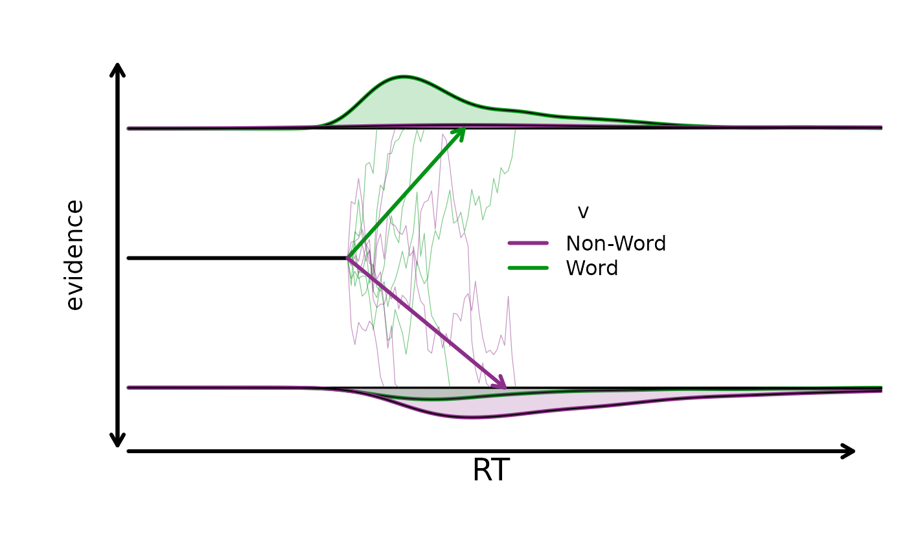
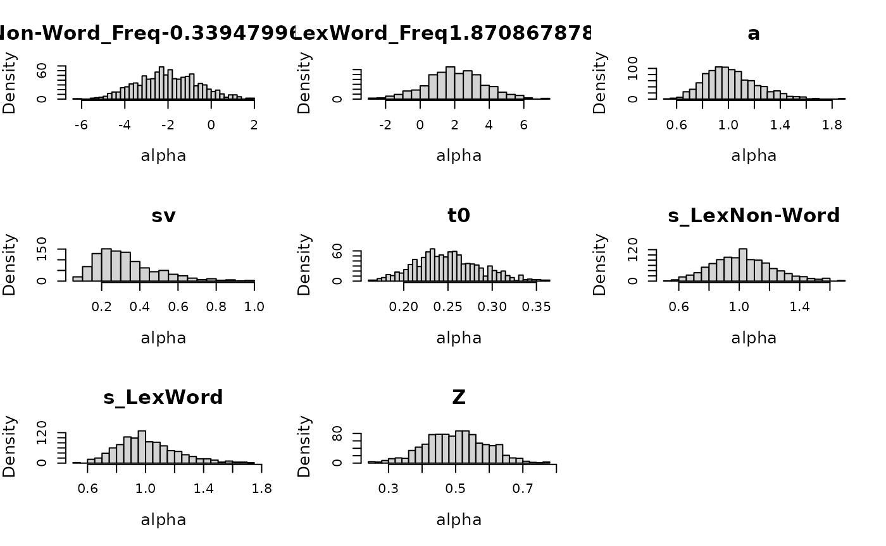
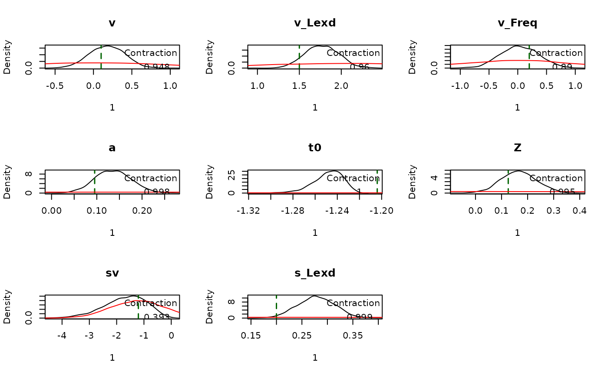
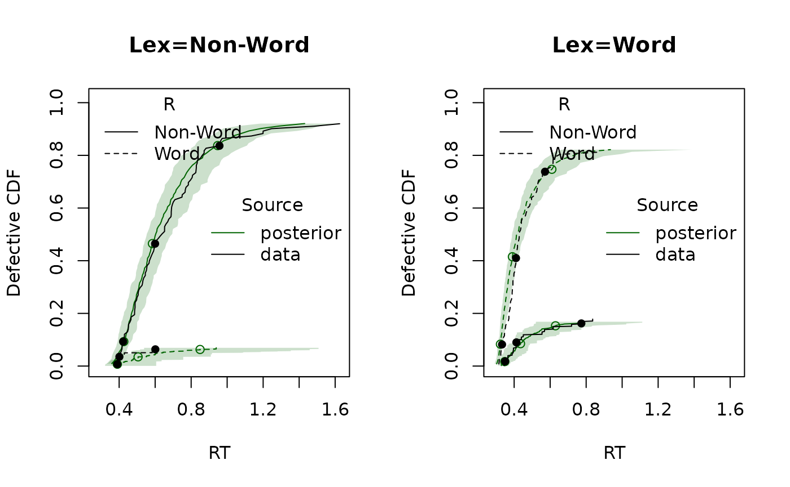

Introduction
This vignette shows a single-subject DDM workflow in EMC2:
- Specify a DDM design with factors, covariates, and parameter formulas
- Inspect sampled parameters and their mapping to design cells
- Simulate data
- Define priors and create an
emcobject - Fit the model
- Summarize posterior estimates and run posterior predictive checks
For details on DDM parameters, constraints, and transformations, see
?DDM.
1. Specify a DDM Design
We set up a lexical decision design with one factor
(Lex: Non-Word vs Word), one covariate (Freq),
and two response levels. Drift rate v depends on lexicality
and frequency. EMC2 takes the levels of the response (R)
factor to determine what the lower and upper boundary is for the DDM. In
this case, lower is associated with non-word responding, and upper with
word responding. Other parameters are consistent across cells. For more
info see ?DDM
LexMat <- cbind(d = c(-1, 1))
design_lex <- design(
factors = list(Lex = c("Non-Word", "Word"), subjects = 1),
covariates = "Freq",
Rlevels = c("Non-Word", "Word"),
formula = list(v ~ Lex + Freq, a ~ 1, t0 ~ 1, Z ~ 1, sv ~ 1, s ~ Lex),
contrasts = list(Lex = LexMat),
constants = c(s = log(1)),
model = DDM
)## Parameter(s) st0, SZ not specified in formula and assumed constant.##
## Sampled Parameters:
## [1] "v" "v_Lexd" "v_Freq" "a" "t0" "Z" "sv" "s_Lexd"
##
## Design Matrices:
## $v
## Lex Freq v v_Lexd v_Freq
## Non-Word 0.5757814 1 -1 0.5757814
## Word -0.3053884 1 1 -0.3053884
##
## $a
## a
## 1
##
## $t0
## t0
## 1
##
## $Z
## Z
## 1
##
## $sv
## sv
## 1
##
## $s
## Lex s s_Lexd
## Non-Word 1 -1
## Word 1 1
##
## $st0
## st0
## 1
##
## $SZ
## SZ
## 1design() combines model and experimental structure into
an emc.design object.
2. Inspect Parameters and Mapping
sampled_pars() returns the free parameters implied by
the design.
sampled_pars(design_lex)## v v_Lexd v_Freq a t0 Z sv s_Lexd
## 0 0 0 0 0 0 0 0mapped_pars() shows how those parameters map back to
model cells. Note that the v parameter is a drift bias parameter,
positive values favor word responding and negative values non-word
responding. The v_Lexd parameter captures general
sensitivity to lexical evidence.
mapped_pars(design_lex)## $v
## Lex Freq
## Non-Word -0.0161902630989461 : v - v_Lexd - 0.0162 * v_Freq
## Word 0.943836210685299 : v + v_Lexd + 0.944 * v_Freq
##
## $s
## Lex
## Non-Word : exp(s - s_Lexd)
## Word : exp(s + s_Lexd)In this example we’ll simulate some data, but you can of course use your own real data! We define true parameter values (on the transformed scale) and inspect the numeric mapping:
p_vector <- sampled_pars(design_lex)
p_vector[] <- c(.1, 1.5, .2, log(1.1), log(.3), qnorm(.55), log(.3), .2)
mapped_pars(design_lex, p_vector)## Lex Freq v a sv t0 st0 s Z SZ z sz
## 1 Non-Word -0.4781501 -1.496 1.1 0.3 0.3 0 0.819 0.55 0 0.605 0
## 2 Word 0.4179416 1.684 1.1 0.3 0.3 0 1.221 0.55 0 0.605 0To see more details on the parameters and their scales see
?DDM.
We can also visualize the implied design-level behavior:
plot_design(design_lex, p_vector = p_vector, factors = list(v = "Lex"))
3. Simulate Data
make_data() simulates trial-level responses and response
times from the design and parameter values.
dat <- make_data(parameters = p_vector, design = design_lex, n_trials = 100)## Imputing Freq with random valuesSee the error that lexicality is randomly imputed? Let’s fix that
with some more realistic values. Frequency is only defined for
Word stimuli, and typically skewed.
word_frequency <- rgamma(sum(dat$Lex == "Word"), shape = 5, rate = .1)
# To make it more normally distributed we log-transform
word_frequency <- log(word_frequency)
# And scale it so that meaning of the intercept remains the mean drift
word_frequency <- as.numeric(scale(word_frequency))
frequency <- numeric(nrow(dat))
frequency[dat$Lex == "Word"] <- word_frequency
# Now we feed it to `make_data()`
dat <- make_data(
parameters = p_vector,
design = design_lex,
n_trials = 100,
covariates = list(Freq = frequency)
)plot_density() gives a quick check of the simulated
data:
plot_density(dat, factors = "Lex")4. Set Prior and Build EMC Object
prior() defines prior settings for the parameters in the
chosen design. Be mindful of the transformations on the parameters when
setting priors! Again see ?DDM
prior_lex <- prior(
design = design_lex,
type = "single",
pmean = c(
v = 0,
v_Lexd = 2,
v_Freq = 0,
a = log(1),
t0 = log(.25),
Z = qnorm(.5),
sv = log(.3),
s_Lexd = 0
),
psd = c(
v = 1,
v_Lexd = 1,
v_Freq = .5,
a = .2,
t0 = .15,
Z = .25,
sv = .5,
s_Lexd = .2
)
)Inspecting the implied prior is helpful to check prior settings.
plot(prior_lex, N = 1e3)## Imputing Freq with random values
Next we construct the emc object.
make_emc() combines data, design, and prior into the object
expected by fit().
emc <- make_emc(dat, design_lex, prior_list = prior_lex, type = "single")## Processing data set 1## Likelihood speedup factor: 1.4 (142 unique trials)5. Fit
The following call is how you can fit this model and save intermediate output:
emc <- fit(emc, fileName = "data/DDM.RData")6. Summarize and Check Model Fit
summary() reports quantiles, Rhat, and ESS
for estimated parameters:
summary(emc)##
## alpha 1
## 2.5% 50% 97.5% Rhat ESS
## v -0.265 0.178 0.604 1.002 2911
## v_Lexd 1.385 1.765 2.167 1.000 2708
## v_Freq -0.596 0.032 0.675 1.000 2574
## a 0.058 0.135 0.216 1.000 3000
## t0 -1.280 -1.247 -1.227 1.003 2849
## Z 0.032 0.166 0.302 1.001 2906
## sv -3.446 -1.624 -0.415 1.001 3301
## s_Lexd 0.207 0.278 0.348 1.000 3000plot_pars() compares posterior densities with the
generating values:
plot_pars(emc, true_pars = p_vector, use_prior_lim = FALSE)
Finally, we generate posterior predictive datasets and compare CDFs:
pp <- predict(emc)
plot_cdf(dat, pp, factors = "Lex")
plot_cdf(dat, pp, factors = "Freq")
In this example, the frequency plot is less intuitive because non-words have frequency fixed at zero. Consequently the second quantile is dominated by non-word responding